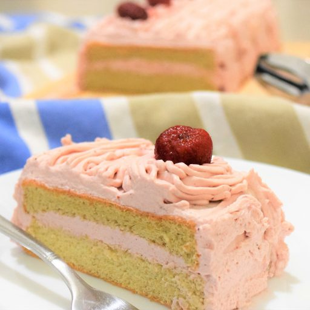
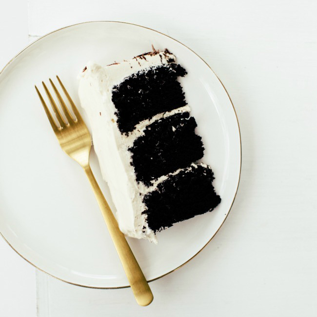
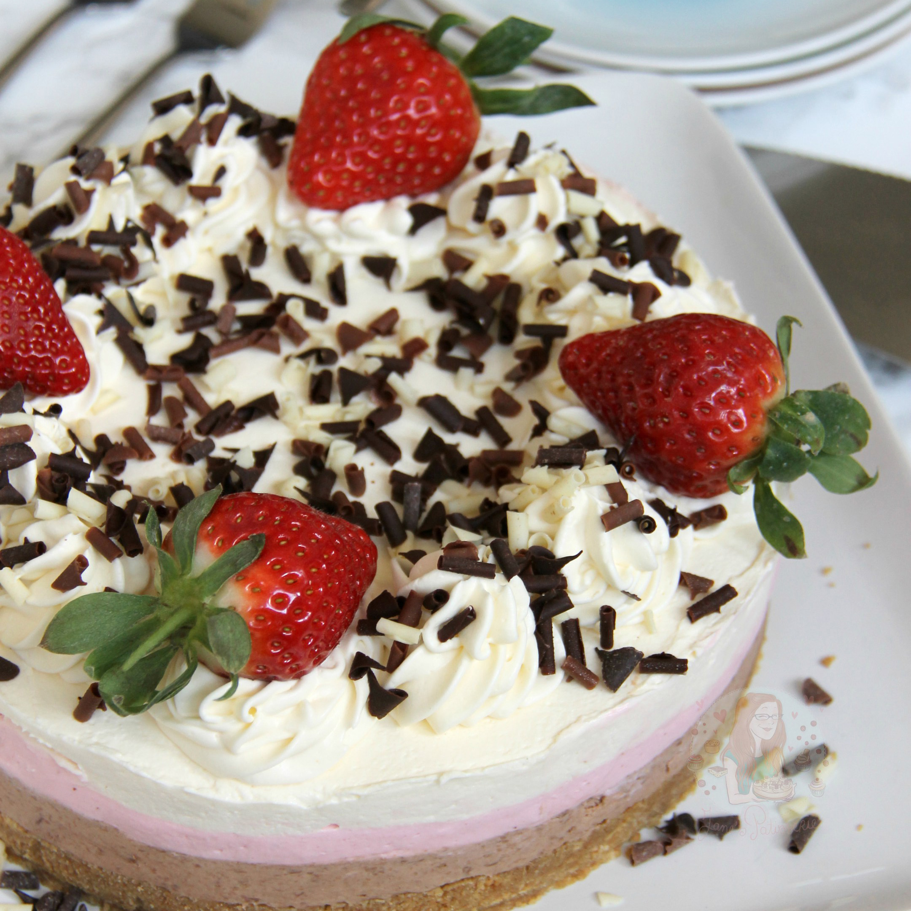

Strawberry Short Cake
The spring is coming! Nothing can express my happiness at this moment when the sky outside the window is getting brighter and the sun has been shining until 4 p.m. It really makes my day!Read More

Chocolate Tiramisu Cake
A sweet and a little bitter beautiful cake I made for my friend's birthday. This is an easy type of cake to make but really really delicious.Read More

No-Bake Neapolitan Cheesecake
A Buttery Biscuit Base, Chocolate Layer, Strawberry Layer, Vanilla Layer, freshly whipped cream, Strawberries, and Chocolate Curls make a show stopping Neapolitan Cheesecake.Read More